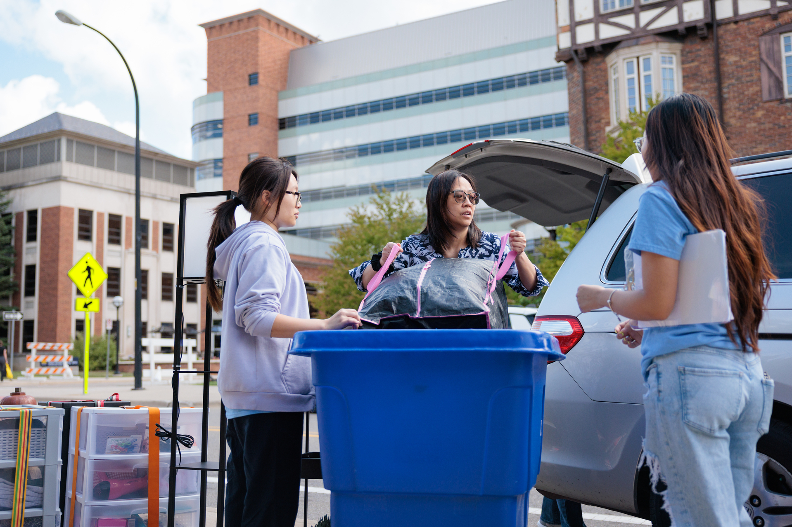
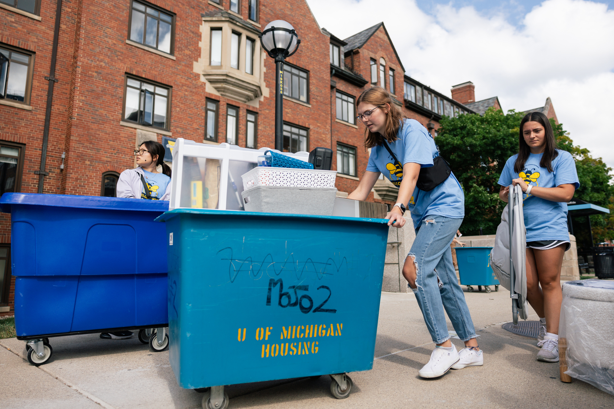
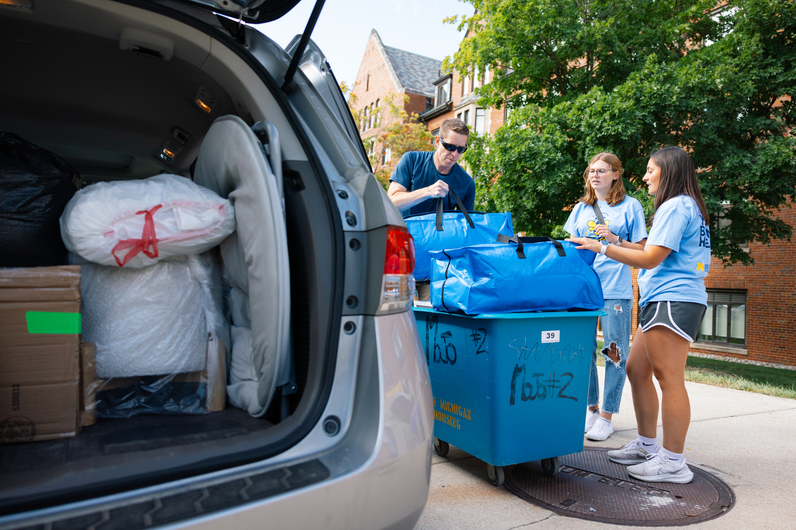
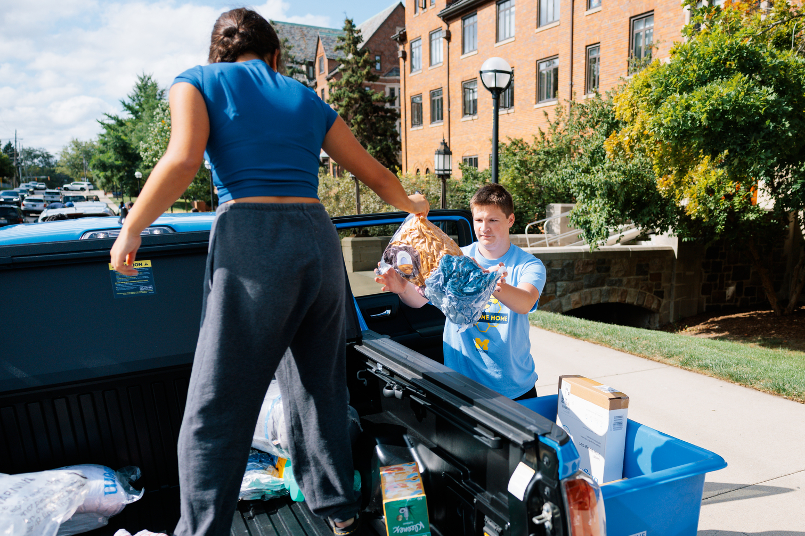
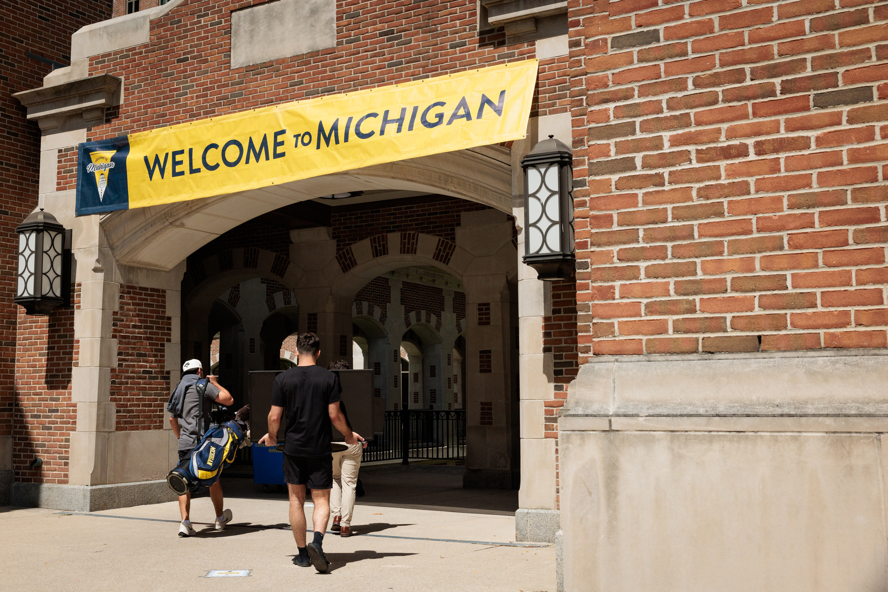

Maize and Blue Cupboard
The Maize and Blue Cupboard is here to ensure that students at the University of Michigan have access to healthy, nutritious food. We recognize the challenges many students face when it comes to maintaining food security, and our mission is to alleviate that stress, allowing students to focus on their studies and well-being.
Our pantry provides free groceries, hygiene products, and other essential items. We believe that food should be a right, not a privilege, and we strive to provide a supportive, welcoming environment for all students in need.
Student Testimonials
See what our students have to say about the impact of the Maize and Blue Cupboard on their lives:
"The Maize and Blue Cupboard helped me when I was struggling to afford groceries. The staff were kind and understanding, and it made a huge difference in my semester." – Alex R.
"It feels great to know that there's a place on campus where I can get fresh food and not feel judged. It has definitely made my college experience better." – Taylor S.
"Volunteering at the pantry has been so rewarding. It's amazing to see the positive impact it has on students' lives." – Jordan L.
Our Services
The Maize and Blue Cupboard offers a range of services to support students facing food insecurity:
- Food Pantry: Access a variety of fresh produce, non-perishable items, and canned goods, free of charge.
- Hygiene Products: We also offer personal care items like shampoo, soap, toothpaste, and feminine hygiene products.
- Nutrition Education: Participate in workshops that provide tips on budgeting, cooking, and maintaining a healthy diet while in college.
Visit our pantry to get the supplies you need or learn more online.
How to Access the Pantry
To make use of our services, all you need is your student ID. The pantry is open to all University of Michigan students, regardless of financial background. We strive to maintain an inclusive and dignified atmosphere, ensuring that every student feels comfortable accessing the resources they need.
Our location: 420 S State St, Ann Arbor, MI 48109. You can visit us during the following hours:
- Monday - Friday: 10:00 AM - 5:00 PM
- Saturday: 12:00 PM - 4:00 PM
Get Involved
Interested in supporting the Maize and Blue Cupboard? We welcome volunteers who are passionate about helping others and want to make a difference in the campus community. Here are some ways you can get involved:
- Volunteer: Sign up to help stock shelves, assist students, or organize drives.
- Donate: Both food and monetary donations are greatly appreciated. Your contributions go directly towards supporting fellow students in need.
- Host a Food Drive: Organize a drive with your club, organization, or residence hall to gather essential items for the pantry.
Learn more about volunteering and donating by visiting our Get Involved page.